QED is a free bot that does the algebra and calculus, typesets your LaTeX, and posts a university-level problem every day.
Add QED to DiscordSee the commands
Exact answers come first, typeset as an image, with the plain text underneath so you can copy it. Every calculation runs in an isolated process with a time and memory limit.
When QED can’t establish a result, it says so. It never guesses.
/integrate expression: exp(-x^2) lower: -oo upper: oo
√π
≈ 1.7724538509
/limit expression: 1/x point: 0
The limit does not exist: from the left it is −∞, from the right +∞.
/simplify /factor /expand | Tidy up, factor over the rationals, or multiply out an expression. |
|---|---|
/diff /integrate /limit | Derivatives up to order 5, definite and indefinite integrals, one- and two-sided limits. |
/solve /evaluate | Solve equations over the reals or complex numbers; numeric values up to 50 digits. |
/matrix | Determinant, inverse, rank, rref, eigenvalues, and arithmetic. Results can be pasted back in to chain operations. |
/latex | Renders LaTeX maths, including matrices, as an image. Nothing is sent to a third-party service. |
Pick a channel and a time, and QED posts a problem from analysis, algebra, number theory, combinatorics, topology and more. None of it is school-level.
Hints, answer checking and solutions appear only to the person who clicked, so the channel never gets spoiled.
Answers of 2*pi/8, pi/4 and 0.25*pi all match. Three difficulty levels, from core coursework to Putnam-hard.
Streaks count posts rather than calendar days, so an outage never breaks anyone’s run.
Questions, bug reports or problems for the bank: qed@ezhang.ca. Contests and a newsletter of new arXiv papers are next on the roadmap.